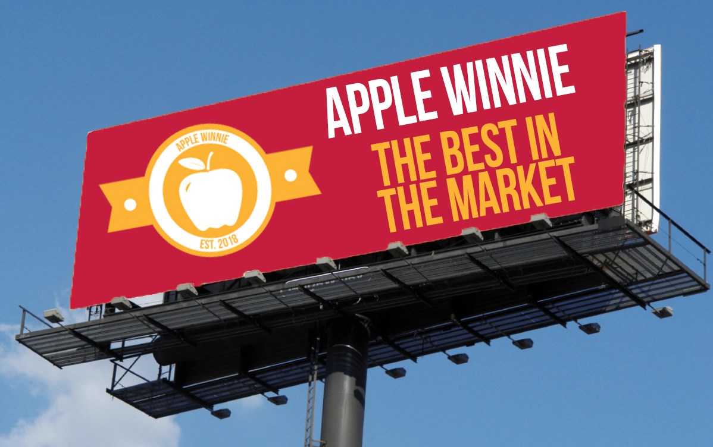
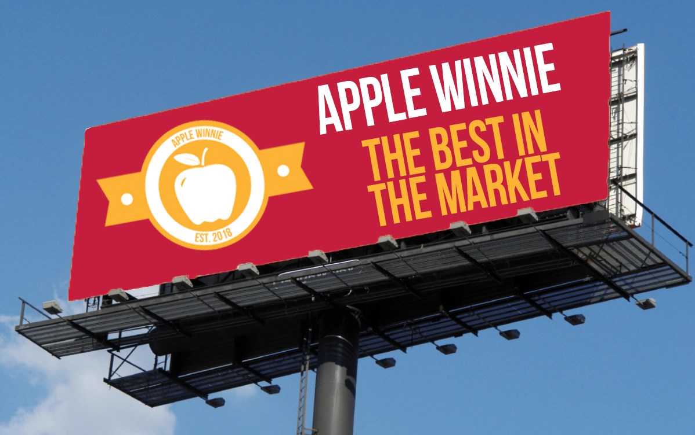

Apple Winnie
 

Our Brand
We are Apple Winnie, the top apple brand in the Dominican Republic. Established in 2018,Located at Constanza with 500 acres of land organically cultivated with the best Dominican hands. Apples trees can grow in a wide range of soils from medium textured clays to gravelly sands. However, poor soils will produce poor results and the best crops are found on fertile sandy soils and loams. Soils should be well drained.